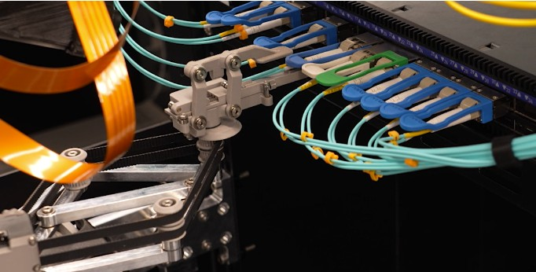
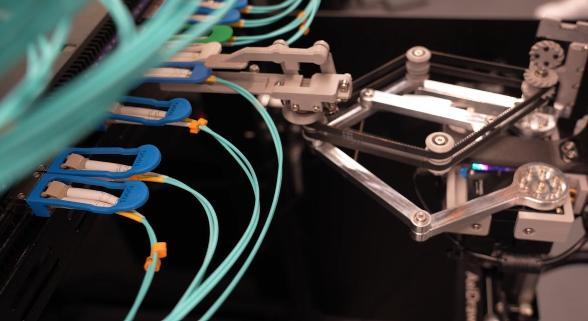

I have spent much of my career as a systems researcher, working at the intersection of Storage, Networking, and Distributed Systems. My degree and DPhil were in Computer Science fields, but in the
last decade I have also learnt about optics, physics, robotics and other disciplines (although I led the UK robot football team for RoboCup 1998!).
During my early career I was fortunate enough to do early work on structured overlays or Distributed Hash Tables (DHTs) when I worked with Peter Druschel in the early 2000s on one of the original DHTs,
called Pastry (awarded the 10 year test of time award in 2011) and on the first highly distributed key-value store
(PAST 2001).
My last papers published while at Microsoft Research:
Latest papers:
Iason Sarantopoulos, Chenyu Liu, Bohong Weng, Sicheng Xu, Yizhong Zhang, Jiaolong Yang, Xin Tong, Fabian Otto, David Sweeney, Andromachi Chatzieleftheriou, Ant Rowstron "Robust Optical Transceiver Manipulation in Cluttered Cable Environments Using 3D Scene Understanding and Planning" 2025 IEEE International Conference on Robotics and Automation, May 2025 [ pdf ]
Sergey Legtchenko, Ioan Stefanovici, Richard Black, Ant Rowstron, Junyi Liu, Paolo Costa, Burcu Canakci, Dushyanth Narayanan, Xingbo Wu "Storage Class Memory is Dead, All Hail Managed-Retention Memory : Rethinking Memory for the AI Era". Proceedings of the 20th ACM Workshop on Hot Topics in Operating Systems (HotOS), May 2025 [ pdf ] [ Arxiv pre-print ]
Burcu Canakci, Junyi Liu, Xingbo Wu, Nathanaël Cheriere, Paolo Costa, Sergey Legtchenko, Dushyanth Narayanan, Antony Rowstron. "Good things come in small packages: Should we build AI clusters with Lite-GPUs?". Proceedings of the 20th ACM Workshop on Hot Topics in Operating Systems (HotOS), May 2025 [ pdf ]
Patrick Anderson, Erika Blancada Aranas, Youssef Assaf, Raphael Behrendt, Richard Black, Marco Caballero, Pashmina Cameron, Burcu Canakci, Thales De Carvalho, Andromachi Chatzieleftheriou, Rebekah Storan Clarke, James Clegg, Daniel Cletheroe, Bridgette Cooper, Tim Deegan, Austin Donnelly, Rokas Drevinskas, Alexander Gaunt, Christos Gkantsidis, Ariel Gomez Diaz, Istvan Haller, Freddie Hong, Teodora Ilieva, Shashidhar Joshi, Russell Joyce, Mint Kunkel, David Lara, Sergey Legtchenko, Fanglin Linda Liu, Bruno Magalhaes, Alana Marzoev, Marvin Mcnett, Jayashree Mohan, Michael Myrah, Trong Nguyen, Sebastian Nowozin, Aaron Ogus, Hiske Overweg, Antony Rowstron, Maneesh Sah, Masaaki Sakakura, Peter Scholtz, Nina Schreiner, Omer Sella, Adam Smith, Ioan Stefanovici, David Sweeney, Benn Thomsen, Govert Verkes, Phil Wainman, Jonathan Westcott, Luke Weston, Charles Whittaker, Pablo Wilke Berenguer, Hugh Williams, Thomas Winkler, Stefan Winzeck "Project Silica: Towards Sustainable Cloud Archival Storage in Glass", ACM Transactions on Storage, Feb 2025 [ pdf ]
Freddie Hong, Iason Sarantopoulos, Elliott Hogg, David Richardson, Yizhong Zhang, Hugh Williams, David Sweeney, Andromachi Chatzieleftheriou, Antony Rowstron. "Self-maintaining [networked] systems: The rise of datacenter robotics!". Proceedings of the Twenty-Third ACM Workshop on Hot Topics in Networks (HotNets), Nov 2024 [ pdf ]
Richard Black, Marco Caballero, Andromachi Chatzieleftheriou, Tim Deegan, Philip Heard, Freddie Hong, Russell Joyce, Sergey Legtchenko, Antony Rowstron, Adam Smith, David Sweeney, Hugh Williams "RASCAL: A Scalable, High-Redundancy Robot for Automated Storage and Retrieval Systems", Proceedings of the 2024 IEEE International Conference on Robotics and Automation (ICRA), May 2024 [ pdf ]
Career at Microsoft Research from May 1999 to June 2025 - from 2020 as a Microsoft Distinguished Engineer
From May 1999 until 1st June 2025 I was at Microsoft Research Cambridge and for the last ~5 years I was a Distinguished Engineer. Since around 2010 I led a small team initially
focused on traditional computer systems and networking.
Building a multi-disciplinary team: Optics for the Cloud (2015 - 2022)
In around 2015 I pivoted the team to focus on projects creating and exploring new optical-based technologies for the cloud across storage, networking and compute - under the banner of "Optics for the Cloud".
This pivot began the creation of a (Microsoft and industry) unique and highly multi-disciplinary team able to work across the full stack from materials -> components -> devices -> systems and the software stacks
running on them.
Examples of the types of projects the lab has worked on include Project Silica,
which explored storing data in glass as a replacement for tape in long-term archival storage.
Another public project was our work on optical computers, initially through
AIM which focussed on optimization,
and then into Analog Optical Computer. Mark Russinovich, the Azure CTO, spoke about it publicly in May 2025:
Optics for the cloud also had some really interesting optical networking projects, and one is a new (highly disruptive) networking technology which is not yet public, but will be soon!
I grew the team to around 70 people, and about 5 major projects at any time which all needed significant lab space (and we were running out of meeting rooms to convert!), and this resulted in Microsoft creating a
second building for Microsoft Research in Cambridge which
opened in September 2022 in 198 Cambridge Science Park. 198 has a set of state of the art labs across three floors to support all the hardware work my team was doing. It was (is) an amazing place!
In 2022 I expanded the scope of the work that the team did to look more broadly at hardware technologies and the co-design of hardware and software to support the cloud.
The team started to look at robotics, focussing in on the robotics needed to support data centers and future AI infrastructure - with the goal of creating the robotic data centers that can self-maintain - see
here.
Early work has resulted in novel highly dexterous robotics focussed on the complex task of networking cable and transceiver management for the data center, where multiple robots collaborate to achieve the tasks.


Most recently this also involved looking at innovative technologies focussed on future AI inference infrastructure and how to make it more efficient from the Silicon up. As part of this, the team defined a new
class of memory called "Managed Retention Memory" (MRM) designed to support AI memory workloads. An exciting space.
Here are some recent papers on these newer areas:
Iason Sarantopoulos, Chenyu Liu, Bohong Weng, Sicheng Xu, Yizhong Zhang, Jiaolong Yang, Xin Tong, Fabian Otto, David Sweeney, Andromachi Chatzieleftheriou, Ant Rowstron "Robust Optical Transceiver Manipulation in Cluttered Cable Environments Using 3D Scene Understanding and Planning" 2025 IEEE International Conference on Robotics and Automation, May 2025 [ pdf ]
Sergey Legtchenko, Ioan Stefanovici, Richard Black, Ant Rowstron, Junyi Liu, Paolo Costa, Burcu Canakci, Dushyanth Narayanan, Xingbo Wu "Storage Class Memory is Dead, All Hail Managed-Retention Memory : Rethinking Memory for the AI Era". Proceedings of the 20th ACM Workshop on Hot Topics in Operating Systems (HotOS), May 2025 [ pdf ] [ Arxiv pre-print ]
Burcu Canakci, Junyi Liu, Xingbo Wu, Nathanaël Cheriere, Paolo Costa, Sergey Legtchenko, Dushyanth Narayanan, Antony Rowstron. "Good things come in small packages: Should we build AI clusters with Lite-GPUs?". Proceedings of the 20th ACM Workshop on Hot Topics in Operating Systems (HotOS), May 2025 [ pdf ]
Freddie Hong, Iason Sarantopoulos, Elliott Hogg, David Richardson, Yizhong Zhang, Hugh Williams, David Sweeney, Andromachi Chatzieleftheriou, Antony Rowstron. "Self-maintaining [networked] systems: The rise of datacenter robotics!". Proceedings of the Twenty-Third ACM Workshop on Hot Topics in Networks (HotNets), Nov 2024 [ pdf ]
Richard Black, Marco Caballero, Andromachi Chatzieleftheriou, Tim Deegan, Philip Heard, Freddie Hong, Russell Joyce, Sergey Legtchenko, Antony Rowstron, Adam Smith, David Sweeney, Hugh Williams "RASCAL: A Scalable, High-Redundancy Robot for Automated Storage and Retrieval Systems", Proceedings of the 2024 IEEE International Conference on Robotics and Automation (ICRA), May 2024 [ pdf ]
Also in 2022 (named in honour of COP27 in Egypt) we also started Egypt a project
looking to use the teams skills in technologies used for the data center to create small low-cost sensors for methane monitoring which are essential to help with measuring and controlling global warming.
And here are some videos of the Silica Robotic Library (using different generations of shuttles!):
And two videos that Microsoft created about Silica for a general audience - one was in an amazing glass box in the middle of garden(!):
Short bio:
I spent from May 1999 until June 2025 working at Microsoft Research in the UK, where I was a Distinguished Engineer.
My research interests are broad, covering the spectrum of systems, distributed systems, storage and networking and many other disciplines.
I received an MEng degree in Computer Systems and Software Engineering in 1993 and a DPhil degree in Computer Science in 1997 both from the University of York, UK.
After completing my DPhil studies, I joined the University of Cambridge in November 1996, initially as a Research Associate in the Computer Laboratory and then as a Senior Research Associate in the
Engineering Department. During this time, I was a consultant for the Olivetti and Oracle Research Laboratory (ORL) (which became AT&T Research Cambridge in 1998).